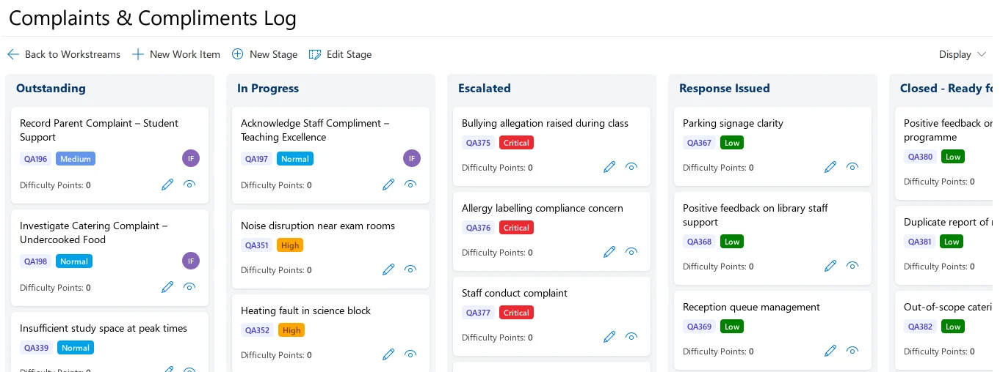
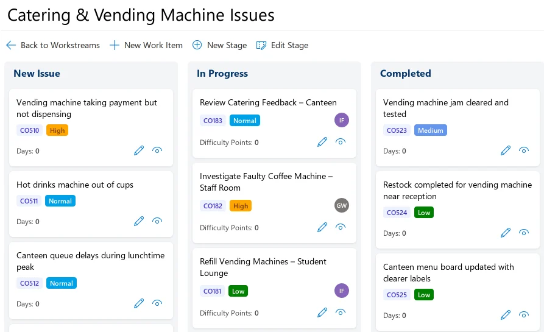
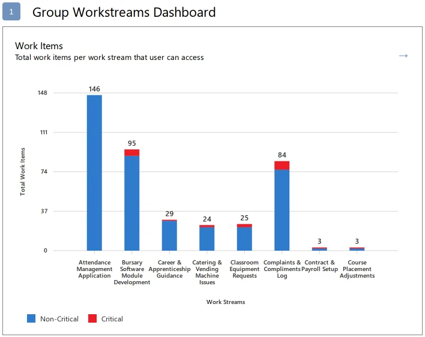

Group WorkStreams
Run the work that keeps arriving, such as complaints, catering faults and HR requests, on Kanban boards instead of spreadsheets. Each kind of work gets its own board and stages, without a project plan or sprints.


Screens from the ZedX demo, which uses sample data for a college group. The demo sets up an account for you, so there’s nothing to register. Try the demo yourself
Every service gets its own workstream
A workstream can stand for a service, a function or an operational activity. The demo college runs separate workstreams such as Complaints & Compliments Log, CPD & Training Requests and Catering & Vending Machine Issues. Portfolios group them by department, for example Campus Operations or Accounts & Finance.
Each workstream has its own team, owners and access rights. The list shows every workstream with its portfolio, owners and active tasks, so you can see who looks after what.


Give each workstream the stages it needs
You add and change stages on the board itself, with the New Stage and Edit Stage buttons. The complaints log above uses five stages to track escalations and responses. Catering issues get by with three: New Issue, In Progress and Completed.
Each work item has a reference, a priority from Low to Critical and difficulty points, plus the assignee if there is one. Epics group related work items when a bigger job needs several of them.
Four views in the side menu show the backlog, the current stages, epics and archived work. A workstream can also be shown as a simple list or a timeline, and its fields and priorities can be changed to suit the work.


See where work is piling up
The Insights dashboard charts the work items in every workstream you can access, with critical items in red. It shows which services carry the most work, and where the critical items are, on one screen.
Managers can follow workload, progress and bottlenecks across workstreams without asking each person for an update. Work that is delayed, blocked or building up at one stage stands out. Each team still decides how it organises its own work.


Group WorkStreams works alongside the other ZedX apps
- Agile Sprints
- When work in a workstream needs sprints, the workstream can be linked to Agile Sprints without entering the data twice. Teams that run sprints can keep their operational and ad-hoc requests here, out of the sprint. About Agile Sprints
- Project Portfolios
- When operational work feeds a project or programme, Project Portfolios can show its progress at a high level, through the project’s structured updates. The detailed work stays in Group WorkStreams. How leaders follow progress
- Audit and governance
- Group WorkStreams can run the day-to-day work behind audit recommendations, governance actions and control improvements. The governance detail stays off the team’s board.
- Education
- Education providers can use it with ZedX Study Planner, an app for students that connects to Group WorkStreams. Tutors and students can plan assignments, coursework and learning activities together.
- Sign-in and hosting
- Group WorkStreams runs on the ZedX Apps Platform, with single sign-on through Microsoft Entra ID and role-based permissions. ZedX hosts the Home, Professional, Group and Corporate editions. Enterprise and Enterprise Plus can run in your own Microsoft Azure subscription or other agreed infrastructure. Editions, sign-in and hosting
Questions about Group WorkStreams
Can it replace the spreadsheets we use to track work?
Yes. Each work item has an owner, a priority and a stage in one shared app that the whole team can see. Teams rely less on spreadsheets, email updates and hand-kept task lists.
How is it different from project management software?
Project management tools are built around defined projects, with schedules, milestones and deadlines. Group WorkStreams is built for routine work and unexpected requests that keep arriving. A team adds a work item when a need comes up, gives it a priority and moves it through the stages.
Can each department run its own workstreams?
Yes. Departments, teams and services can each have their own workstreams, organised around their own processes. Permissions control who can see and manage each one, and authorised managers can see across them.
Does Group WorkStreams include AI?
Yes. Ask Cloe, the AI assistant built into ZedX, is in the Group WorkStreams menu. You can ask it about your workstreams, get guidance and keep a conversation going. Swiftpro says Cloe uses OpenAI technology.
Which editions include it?
Group WorkStreams is currently part of the Home, Professional and Group editions. In Corporate, Enterprise and Enterprise Plus you can choose any ZedX app, Group WorkStreams included. Compare the editions
Ask Swiftpro for a Group WorkStreams demo
Use the contact form on zedxapps.com. Tell Swiftpro, the company that makes ZedX, which kinds of work you’d like to run as workstreams and how many people would use them. They’ll get back to you.